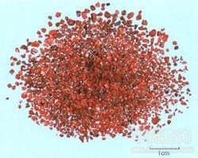

朱砂

拼音
Zhū Shā
别名
丹砂、辰砂
来源
本品为硫化物类矿物辰砂族辰砂，主含硫化汞（HgS）。采挖后，选取纯净者，用磁铁吸净含铁的杂质，再用水淘去杂石和泥沙。
生境分布
主产贵州、湖南、四川、广西、云南等地。
药材特点
三方晶系。晶体成厚板状或菱面体，在自然界中单体少见，多呈粒状、致密状块体出现，也有呈粉末状被膜者。颜色为朱红色至黑红色，有时带铅灰色。条痕为红色。金刚光泽，半透明。有平行的完全解理。断口呈半贝壳状或参差状。硬度2～2.5。比重8.09～8.2。性脆。常呈矿脉，产于石灰岩、板岩、砂岩中。
性状
本品为粒状或块状集合体，呈颗粒状或块片状。鲜红色或暗红色，条痕红色至褐红色，具光泽。体重，质脆，片状者易破碎，粉末状者有闪烁的光泽。无臭，无味。
性味
甘，微寒；有毒。
功能主治
清心镇惊，安神解毒。用于心悸易惊，失眠多梦，癫痫发狂，小儿惊风，视物昏花，口疮，喉痹，疮疡肿毒。
用法用量
0.1～0.5g,多入丸散服，不宜入煎剂。外用适量。
化学成分
朱砂主要成分为硫化汞，纯者相当于HgS，理论上含汞86.2％，硫13.8％；但常夹杂种种物质，其中最常见者为雄黄、磷灰石、沥青质等。
药理作用
1：本品有镇静、催眠作用
2：外用能扼杀皮肤细菌及寄生虫
3：对消化系的作用：人工朱砂给家兔灌胃0.1-0.2g/kg：能使尿排出的总氮量增加，体重亦有增加
摘录
《中国药典》